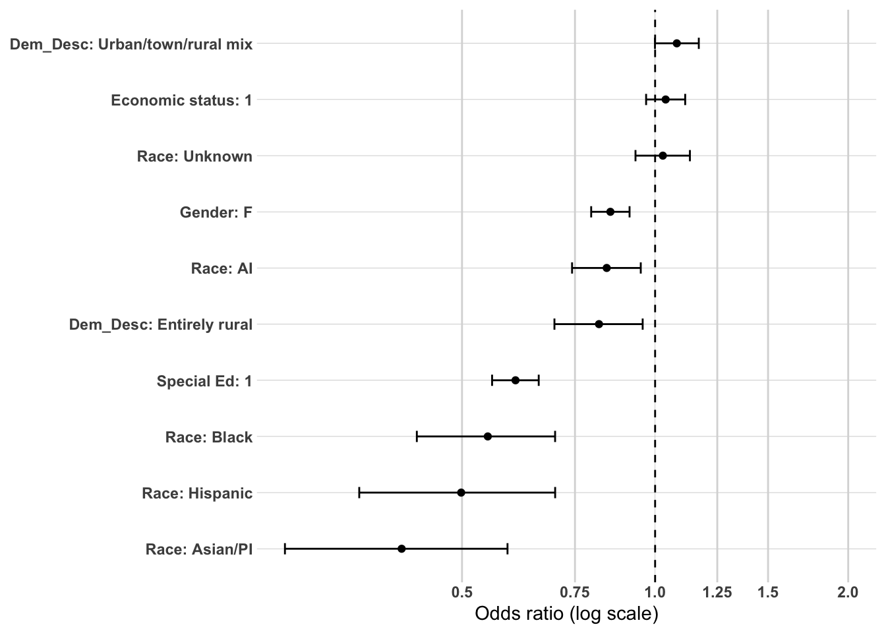
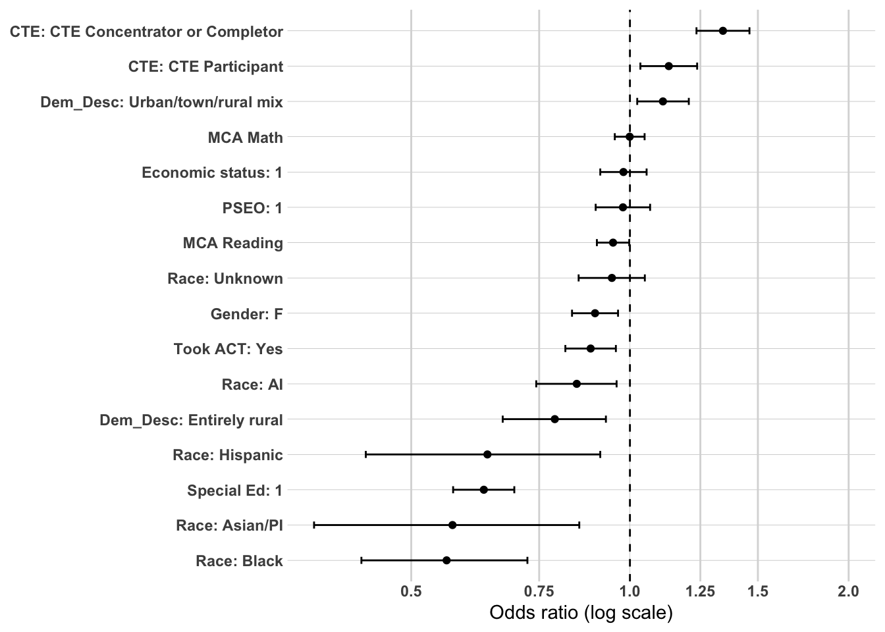
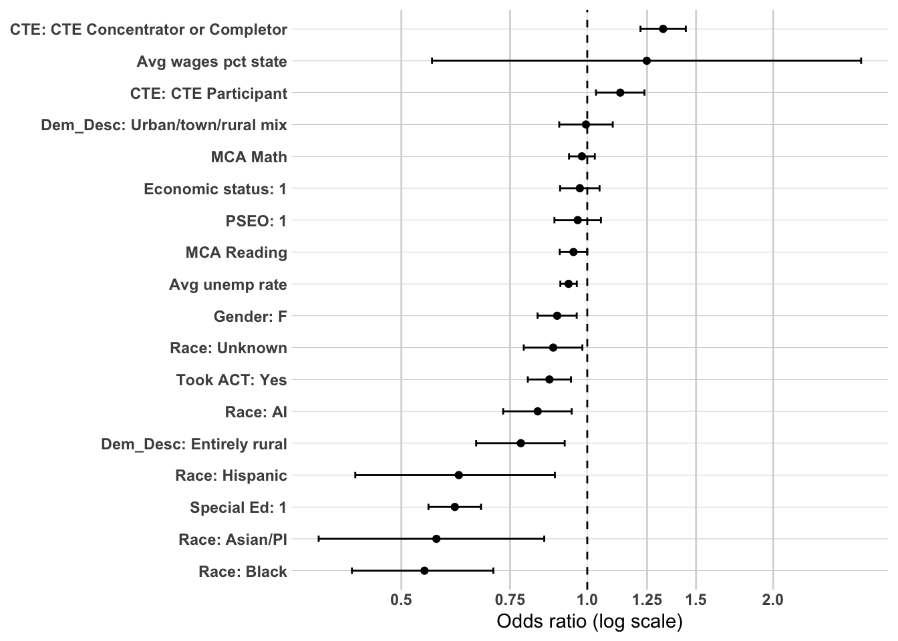
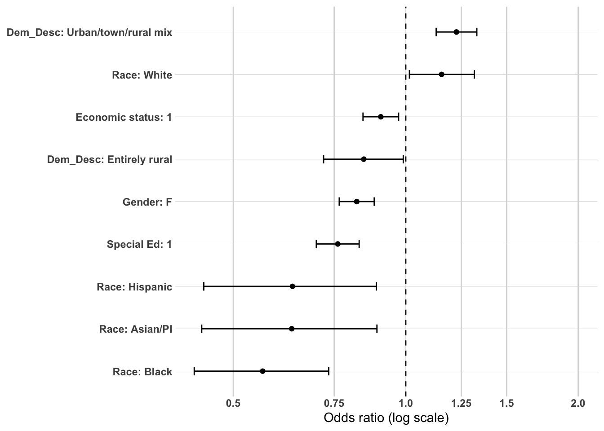
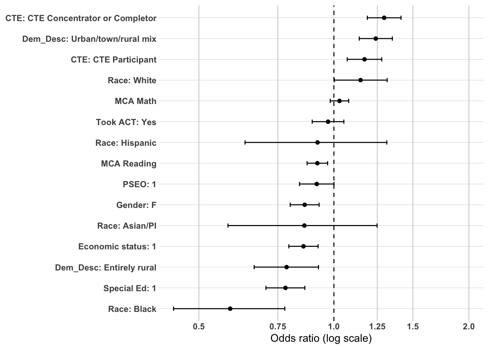
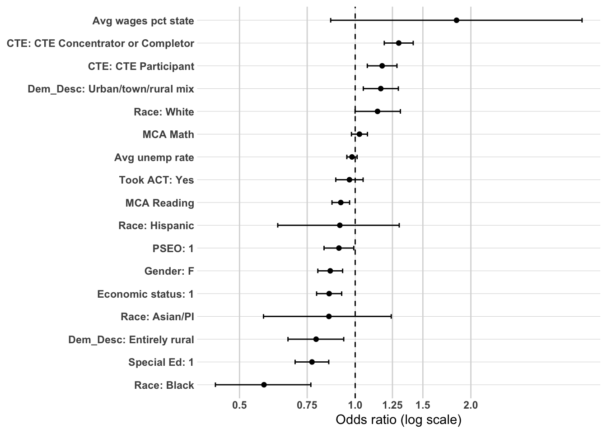
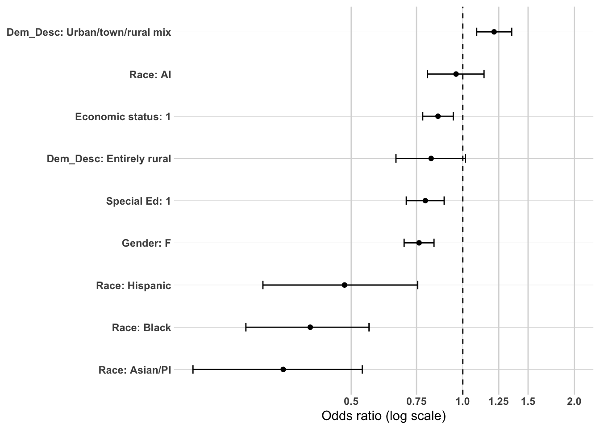
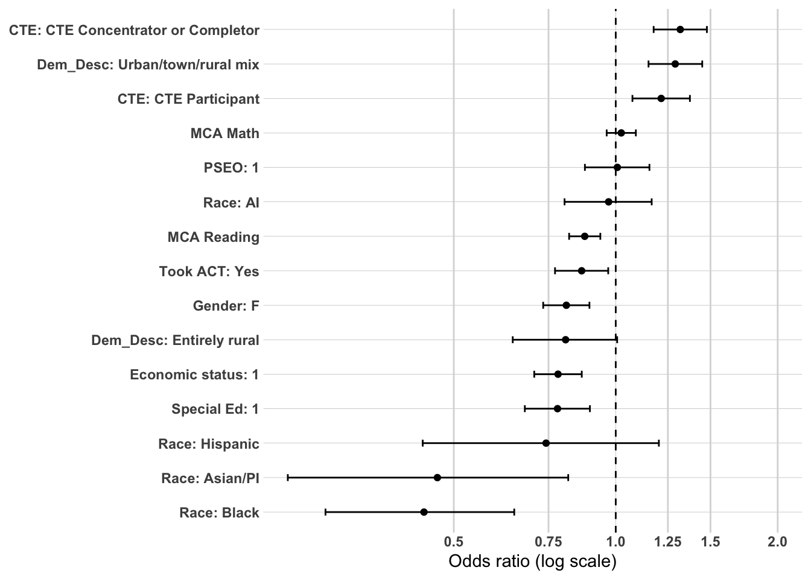
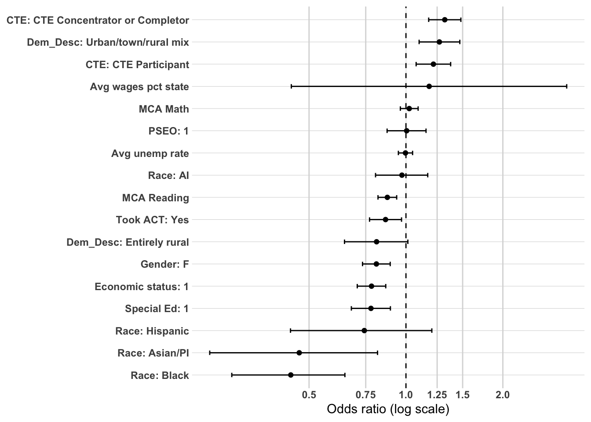

The primary purpose of this supplemental analysis is to examine workforce participation pathways among individuals who did not complete a postsecondary credential. Earlier sections focused on the full population and demonstrated that postsecondary attainment—particularly where and how a credential was earned—was the dominant mechanism associated with sustained regional employment.
This section shifts attention to the population for whom that mechanism does not operate.
Among non–postsecondary graduates, workforce participation pathways cannot be explained by credential depth, institutional sector, or graduation location. Instead, earlier descriptive and CART analyses identified high school career alignment (CTE), structural disadvantage, and local labor market context as central differentiators of workforce outcomes.
To strengthen confidence in those findings, a limited multivariate analysis is conducted using logistic regression. As in the full-population analysis, the goal is not causal inference or prediction, but confirmatory testing. Specifically, this modeling examines whether the strongest tree-based and bivariate relationships remain directionally consistent when key predictors are considered simultaneously.
Logistic regression is used here as a confirmatory tool rather than the primary analytic framework.
Methodology
Study Population
The analytic sample is restricted to individuals who did not complete a postsecondary credential. This restriction isolates workforce dynamics among high school graduates entering the labor market directly.
Outcome Variable
The primary model predicts:
Sustained employment – region (binary outcome)
The dependent variable is coded as:
1 = Sustained employment – region
0 = All other workforce outcomes (including sustained employment – MN outside the region, non-sustained employment, and no MN employment record)
This specification maintains consistency with earlier modeling while isolating mechanisms specific to the non-college population.
Independent Variables
Because postsecondary mechanisms are not applicable in this subgroup, the model focuses on high school preparation, structural background, and local labor market context identified as important in earlier analyses.
Predictors include:
High school accomplishments
cte.achievement
took.ACT
pseo.participant
MCA.M
MCA.R
ap.exam
Demographic characteristics
RaceEthnicity
economic.status
SpecialEdStatus
Gender
High school and local context
avg.wages.pct.state
avg.unemp.rate
Variables are selected based on:
Strength of association in prior subgroup analyses
Conceptual plausibility within a non-college pathway
Policy relevance
Avoidance of redundancy
Postsecondary variables are excluded by design.
Analysis Approach
This multivariate analysis mirrors the structured confirmatory framework used in the full-population models but is adapted to the non-college subgroup.
The dependent variable is a binary indicator of Sustained employment – region.
Time-Based Modeling Strategy
Workforce attachment evolves over time. To capture this dynamic process, models will be estimated separately at:
1 year after high school
5 years after high school
10 years after high school
This staged approach allows examination of how mechanisms change across early, mid-term, and longer-term workforce trajectories.
Year 1: Immediate Labor Market Entry
The 1-year model captures early transition into the labor market. At this stage, high school preparation and career alignment are expected to exert the strongest influence. CTE exposure and intensity may function as immediate workforce anchors, while structural disadvantage may strongly shape early labor market attachment.
Year 5: Stabilization Phase
The 5-year model reflects early career consolidation. At this point, initial preparation effects may attenuate, and differences associated with labor market context and structural disadvantage may become more pronounced. This model evaluates whether early alignment persists or whether structural conditions increasingly shape outcomes.
Year 10: Long-Term Embeddedness
The 10-year model captures longer-term workforce integration. Earlier analyses suggest that local labor market conditions (e.g., wages and unemployment) may become more dominant over time. This specification tests whether contextual economic factors increasingly explain sustained regional employment among non-college graduates as individual preparation effects diminish.
Estimating separate models at each time point allows for:
Evaluation of coefficient stability over time
Assessment of attenuation or amplification of predictors
Identification of shifting mechanisms from individual preparation to structural context
Modeling Strategy
Within each time period, predictors are introduced in a structured sequence:
Model 1: Structural and Preparation Baseline
Includes demographic and high school preparation variables:
Demographics
RaceEthnicity
economic.status
SpecialEdStatus
Gender
High school characteristics
Dem_Desc
Model 2: Add high school accomplishments
We will add the following;
High school accomplishments
cte.achievement
pseo.participant
took.ACT
MCA.M
MCA.R
Purpose:
Test whether pathway alignment explains structural gaps.
See whether CTE remains strong net of demographics.
See whether ACT participation functions as mobility marker.
Observe whether SpecialEd/economic effects attenuate once preparation is included.
This is the core explanatory model.
Model 3 - Add Local Labor Market Context
Adds contextual labor market measures:
avg.wages.pct.state
avg.unemp.rate
Purpose
Teste whether labor market strength changes the mechanism.
See whether geography (Dem_Desc) still matters once county wages/unemployment are included.
Evaluate whether local economy explains disparities or whether they remain structural.
This is the full confirmatory specification.
This specification evaluates whether labor
Evaluation Criteria
Results will be reported using:
Odds ratios
95% confidence intervals
Statistical significance levels
Directional interpretation
Model comparison metrics (AIC and pseudo R²) will be used to assess relative improvement across specifications, but emphasis will remain on coefficient magnitude and stability across time.
Interpretation Framework
Interpretation will focus on:
Whether CTE retains independent influence across time
Whether structural disadvantage grows or attenuates
Findings will be described as associations holding other included variables constant. No causal claims will be made.
Conceptual Focus
For non–postsecondary graduates, this time-structured modeling framework evaluates three evolving mechanisms:
Career alignment at labor market entry
Structural advantage or disadvantage shaping early stability
Local economic opportunity structures influencing long-term embeddedness
Together, these models clarify whether sustained regional employment among non-college graduates reflects early career alignment, structural inequality, changing economic context, or a combination of all three across time.
Prep data
The first thing I need to do is setup my dataset for modeling. I’m going to create the workforce participation into a binary and will use grad.year.1, grad.year.5 and grad.year.10 as my modeling year.
We now have 16,720 individuals to model with 13 variables not including grad.year.5.
Modeling - grad.year.1
Model 1 - Structural and Preparation Baseline
Model 1 estimates the association between demographic background and school geography with sustained regional employment one year after graduation. This specification excludes preparation and labor market variables, isolating whether structural positioning alone differentiates early workforce attachment.
Strongest Associations
Race: Asian/PI
OR ≈ 0.40 (~60% lower odds)
Asian/PI students are substantially less likely than White students (reference) to be in sustained regional employment one year after graduation.
Race: Hispanic
OR ≈ 0.50 (~50% lower odds)
Hispanic students exhibit sharply lower odds of early regional workforce attachment.
Race: Black
OR ≈ 0.55 (~45% lower odds)
Black students also show substantially reduced odds of sustained regional employment.
Moderate Effects
Special Education Status
OR ≈ 0.61 (~39% lower odds)
Students receiving special education services are significantly less likely to secure sustained regional employment at Year 1.
Race: American Indian
OR ≈ 0.84 (~16% lower odds)
This effect is smaller than other racial disparities but remains negative relative to White students.
Dem_Desc: Entirely rural
OR ≈ 0.82 (~18% lower odds)
Students from entirely rural schools show modestly lower odds relative to the reference geography.
Modest Effects
Gender: Female
OR ≈ 0.85 (~15% lower odds)
Female students have slightly lower odds of sustained regional employment compared to males.
Dem_Desc: Urban/town/rural mix
OR ≈ 1.08 (~8% higher odds)
This effect is small and close to neutral.
Economic Status (Low-Income)
OR ≈ 1.04 (~4% higher odds)
This association is very small and substantively negligible.
Race: Unknown
OR ≈ 1.03
Not statistically or substantively distinct from White students.
Overall Interpretation
At one year after graduation, structural racial disparities are the dominant differentiators of sustained regional employment among non-college graduates. Asian/PI, Hispanic, and Black students face substantially lower odds of early regional workforce attachment relative to White peers. Special education status also represents a major structural barrier. Geographic school context shows modest associations, while gender and economic status have comparatively small effects in this baseline specification. Overall, disparities in regional workforce attachment emerge immediately and are strongly patterned by race and special education status even before high school preparation and labor market context are considered.
or_plot <-tidy(model1, conf.int =TRUE, exponentiate =TRUE) %>%filter(term !="(Intercept)") %>%mutate(# Make labels nicer (edit these replacements to match your exact factor labels)term =str_replace_all(term, c("RaceEthnicity"="Race: ","economic.status"="Economic status: ","Gender"="Gender: ","SpecialEdStatus"="Special Ed: ","Dem_Desc"="Dem_Desc: " )),# Put most important effects near the top (optional: tweak ordering later)term =fct_reorder(term, estimate) )ggplot(or_plot, aes(x = estimate, y = term)) +geom_vline(xintercept =1, linetype ="dashed") +geom_vline(xintercept =c(0.5, 0.75, 1.25, 1.5, 2),color ="grey85") +geom_point() +geom_errorbar(aes(xmin = conf.low, xmax = conf.high),orientation ="y",width =0.2 ) +scale_x_log10(breaks =c(0.5, 0.75, 1, 1.25, 1.5, 2),labels =c("0.5", "0.75", "1.0", "1.25", "1.5", "2.0") ) + theme_line +labs(x ="Odds ratio (log scale)",y =NULL )

Model 2 - Add high school accomplishments
Model 2 adds high school preparation and pathway variables to the structural baseline model. By introducing CTE participation, ACT participation, MCA performance, and PSEO, this specification tests whether early academic and career alignment explain the disparities observed in Model 1.
Model fit improves meaningfully (AIC drops from 20,760 to 19,240), indicating that preparation factors explain additional variation in sustained regional employment at one year.
CTE Pathways
CTE emerges as the strongest positive predictor in the model.
These effects are substantial and clearly distinguish students engaged in structured career pathways from those who were not. CTE functions as a meaningful early anchor to regional employment, even after controlling for demographic background and school geography.
Academic Orientation
Academic mobility signals align with lower regional retention.
Took ACT: ~12% lower odds of sustained regional employment (OR ≈ 0.88).
PSEO participation: not statistically distinct (OR ≈ 0.98).
MCA Reading: small negative association (OR ≈ 0.95).
MCA Math: no meaningful independent association (OR ≈ 1.00).
ACT participation appears to signal outward mobility even among non-college graduates. In contrast, MCA performance contributes little independent explanatory power at Year 1 once other variables are included.
Demographic and Structural Factors
Importantly, large structural disparities remain after accounting for preparation.
Asian/PI students: ~43% lower odds (OR ≈ 0.57).
Black students: ~44% lower odds (OR ≈ 0.56).
Hispanic students: ~36% lower odds (OR ≈ 0.64).
American Indian students: ~16% lower odds (OR ≈ 0.84).
Special Education status: ~37% lower odds (OR ≈ 0.63).
Economic disadvantage: no meaningful independent effect.
Race Unknown: not statistically distinct.
Compared to Model 1, racial disparities attenuate slightly for Hispanic and Asian/PI students but remain large and substantively meaningful. Special education gaps also persist with only modest reduction. This indicates that preparation does not fully account for early structural differences in regional workforce attachment.
School geography continues to matter modestly, though these effects are smaller than those associated with race and special education status.
Overall Interpretation
At one year after graduation, CTE participation stands out as the clearest positive pathway into sustained regional employment among non-college graduates. ACT participation aligns with lower regional retention, suggesting academic mobility even within this subgroup.
However, structural racial disparities and special education gaps remain substantial after accounting for preparation. The addition of academic and career pathway variables improves overall model fit but does not eliminate underlying inequities. Early regional workforce attachment reflects both pathway alignment and durable structural differences rather than preparation alone.
or_plot <-tidy(model2, conf.int =TRUE, exponentiate =TRUE) %>%filter(term !="(Intercept)") %>%mutate(# Make labels nicer (edit these replacements to match your exact factor labels)term =str_replace_all(term, c("RaceEthnicity"="Race: ","economic.status"="Economic status: ","SpecialEdStatus"="Special Ed: ","pseo.participant"="PSEO: ","cte.achievement"="CTE: ","MCA.R"="MCA Reading","MCA.M"="MCA Math","Dem_Desc"="Dem_Desc: ","Gender"="Gender: ","took.ACT"="Took ACT: " )),# Put most important effects near the top (optional: tweak ordering later)term =fct_reorder(term, estimate) )ggplot(or_plot, aes(x = estimate, y = term)) +geom_vline(xintercept =1, linetype ="dashed") +geom_vline(xintercept =c(0.5, 0.75, 1.25, 1.5, 2),color ="grey85") +geom_point() +geom_errorbar(aes(xmin = conf.low, xmax = conf.high),orientation ="y",width =0.2 ) +scale_x_log10(breaks =c(0.5, 0.75, 1, 1.25, 1.5, 2),labels =c("0.5", "0.75", "1.0", "1.25", "1.5", "2.0") ) + theme_line +labs(x ="Odds ratio (log scale)",y =NULL )

Model 3 - Add local labor market context
Model 3 adds county-level labor market context—average wages (percent of state) and unemployment rate—to the structural and preparation model. Model fit improves slightly (AIC drops from 19,240 to 19,230), indicating that local labor market conditions contribute modest additional explanatory power at one year after graduation.
CTE Pathways
CTE remains the strongest positive predictor in the model.
These effects are virtually unchanged from Model 2, reinforcing that structured career pathways are the dominant early anchor to regional employment among non-college graduates. Labor market context does not attenuate the CTE relationship.
Local Labor Market Context
Average wages (% of state): ~25% higher odds (OR ≈ 1.25).
Unemployment rate: modest negative association (OR ≈ 0.93).
Higher relative county wages are associated with greater odds of sustained regional employment at Year 1, suggesting that stronger local economies reinforce early retention. The unemployment effect is small in magnitude. Importantly, adding these contextual measures does not meaningfully shift the coefficients of individual-level predictors.
Academic Orientation
Took ACT: ~13% lower odds (OR ≈ 0.87).
PSEO participation: not statistically distinct (OR ≈ 0.97).
MCA Reading: small negative association (OR ≈ 0.95).
MCA Math: modest negative association (OR ≈ 0.98).
As in Model 2, ACT participation aligns with lower regional retention, consistent with academic mobility signaling. MCA performance remains weakly associated with early regional attachment once other factors are controlled.
Demographic and Structural Factors
Substantial disparities persist.
Black students: ~45% lower odds (OR ≈ 0.55).
Asian/PI students: ~43% lower odds (OR ≈ 0.57).
Hispanic students: ~38% lower odds (OR ≈ 0.62).
American Indian students: ~17% lower odds (OR ≈ 0.83).
Special Education status: ~39% lower odds (OR ≈ 0.61).
Economic disadvantage: no meaningful independent effect.
Race Unknown: modest negative association.
These effects are highly stable relative to Model 2, indicating that local wage and unemployment conditions do not explain the underlying racial or special education disparities in early regional workforce attachment.
Urban/town/rural mix schools: no meaningful independent association.
Once county-level wage and unemployment are included, the urban/town/rural mix effect effectively disappears, suggesting that broader labor market context may account for some geographic variation observed earlier.
Overall Interpretation
At one year after graduation, sustained regional employment among non-college graduates is shaped primarily by CTE participation and persistent structural disparities. Stronger county wage conditions modestly increase regional retention, but they do not alter the central mechanisms identified in earlier models. Racial disparities and special education gaps remain large and stable, and academic orientation continues to signal outward mobility. Early regional workforce attachment reflects a combination of pathway alignment and structural positioning, with local economic strength playing a secondary, reinforcing role rather than a transformative one.
or_plot <-tidy(model3, conf.int =TRUE, exponentiate =TRUE) %>%filter(term !="(Intercept)") %>%mutate(# Make labels nicer (edit these replacements to match your exact factor labels)term =str_replace_all(term, c("RaceEthnicity"="Race: ","economic.status"="Economic status: ","SpecialEdStatus"="Special Ed: ","pseo.participant"="PSEO: ","cte.achievement"="CTE: ","MCA.R"="MCA Reading","MCA.M"="MCA Math","Dem_Desc"="Dem_Desc: ","Gender"="Gender: ","took.ACT"="Took ACT: ","avg.unemp.rate"="Avg unemp rate","avg.wages.pct.state"="Avg wages pct state" )),# Put most important effects near the top (optional: tweak ordering later)term =fct_reorder(term, estimate) )ggplot(or_plot, aes(x = estimate, y = term)) +geom_vline(xintercept =1, linetype ="dashed") +geom_vline(xintercept =c(0.5, 0.75, 1.25, 1.5, 2),color ="grey85") +geom_point() +geom_errorbar(aes(xmin = conf.low, xmax = conf.high),orientation ="y",width =0.2 ) +scale_x_log10(breaks =c(0.5, 0.75, 1, 1.25, 1.5, 2),labels =c("0.5", "0.75", "1.0", "1.25", "1.5", "2.0") ) + theme_line +labs(x ="Odds ratio (log scale)",y =NULL )

Modeling - grad.year.5
Model 1 - Structural and Preparation Baseline
Model 1 estimates the association between demographic background and school geography with sustained regional employment five years after graduation. This baseline specification excludes preparation and labor market variables, allowing us to assess whether structural positioning alone differentiates mid-term regional workforce attachment.
Model fit (AIC ≈ 19,460) is slightly lower than Year 1, reflecting expected changes in workforce stabilization over time.
Demographic and Structural Factors
Racial disparities remain substantial at Year 5.
Black students: ~44% lower odds of sustained regional employment (OR ≈ 0.56).
Asian/PI students: ~37% lower odds (OR ≈ 0.63).
Hispanic students: ~37% lower odds (OR ≈ 0.63).
These effects are similar in magnitude to Year 1, indicating that early disparities persist into mid-career stabilization rather than narrowing over time.
Special Education status: ~24% lower odds (OR ≈ 0.76).
The special education gap remains meaningful but is somewhat smaller than at Year 1, suggesting modest convergence over time.
Geographic differences remain modest but appear somewhat stronger at Year 5 than at Year 1, suggesting that school context may have a growing association with mid-term workforce anchoring.
Overall Interpretation
Five years after high school, sustained regional employment among non-college graduates remains strongly patterned by race and, to a lesser extent, special education status and gender. Racial disparities observed at Year 1 persist with little attenuation, indicating durable structural differences in workforce attachment.
School geography shows modest differentiation, while economic disadvantage plays a relatively minor role. Overall, structural positioning continues to shape mid-term regional employment outcomes even before accounting for preparation or labor market context.
or_plot <-tidy(model1, conf.int =TRUE, exponentiate =TRUE) %>%filter(term !="(Intercept)") %>%mutate(# Make labels nicer (edit these replacements to match your exact factor labels)term =str_replace_all(term, c("RaceEthnicity"="Race: ","economic.status"="Economic status: ","Gender"="Gender: ","SpecialEdStatus"="Special Ed: ","Dem_Desc"="Dem_Desc: " )),# Put most important effects near the top (optional: tweak ordering later)term =fct_reorder(term, estimate) )ggplot(or_plot, aes(x = estimate, y = term)) +geom_vline(xintercept =1, linetype ="dashed") +geom_vline(xintercept =c(0.5, 0.75, 1.25, 1.5, 2),color ="grey85") +geom_point() +geom_errorbar(aes(xmin = conf.low, xmax = conf.high),orientation ="y",width =0.2 ) +scale_x_log10(breaks =c(0.5, 0.75, 1, 1.25, 1.5, 2),labels =c("0.5", "0.75", "1.0", "1.25", "1.5", "2.0") ) + theme_line +labs(x ="Odds ratio (log scale)",y =NULL )

Model 2 - Add high school accomplishments
Model 2 adds high school preparation and pathway variables to the structural baseline at five years after graduation. By incorporating CTE participation, ACT participation, MCA performance, and PSEO, this specification evaluates whether mid-term regional workforce attachment is explained by high school academic and career alignment.
Model fit improves meaningfully (AIC drops from 19,460 to 18,020), indicating that preparation factors account for additional variation in sustained regional employment at Year 5.
These effects are slightly smaller than at Year 1 but remain substantial. Career-aligned coursework continues to function as a durable regional anchor five years after high school.
Academic Orientation
Took ACT: no meaningful association (OR ≈ 0.97).
PSEO participation: ~9% lower odds (OR ≈ 0.92).
MCA Reading: modest negative association (OR ≈ 0.92).
MCA Math: small positive association (OR ≈ 1.03).
Unlike Year 1, ACT participation no longer differentiates regional retention at Year 5. Academic mobility signals appear to weaken over time within the non-college subgroup. MCA performance contributes only modest explanatory value.
Demographic and Structural Factors
Structural disparities remain evident, though some attenuation occurs relative to Model 1.
Black students: ~41% lower odds (OR ≈ 0.59).
Asian/PI students: ~14% lower odds (OR ≈ 0.86).
Hispanic students: not meaningfully distinct (OR ≈ 0.92).
White students: ~15% higher odds (OR ≈ 1.15).
Special Education status: ~22% lower odds (OR ≈ 0.78).
Compared to Model 1, disparities for Hispanic and Asian/PI students attenuate substantially once preparation is included, suggesting that some of the Year 5 gap is mediated through high school pathway differences. However, the Black student gap remains large and persistent. Special education and economic disadvantage effects remain moderate.
Geographic differentiation persists and remains comparable in magnitude to Model 1, indicating that school context retains independent association even after accounting for preparation.
Overall Interpretation
At five years after graduation, CTE participation remains the clearest and most durable pathway into sustained regional employment among non-college graduates. The strength of ACT as a mobility signal diminishes by Year 5, while racial disparities—particularly for Black students—remain pronounced.
Preparation variables explain some mid-term disparities, especially for Hispanic and Asian/PI students, but they do not eliminate structural gaps. Career alignment continues to matter, but durable structural positioning remains central to understanding sustained regional workforce attachment.
or_plot <-tidy(model2, conf.int =TRUE, exponentiate =TRUE) %>%filter(term !="(Intercept)") %>%mutate(# Make labels nicer (edit these replacements to match your exact factor labels)term =str_replace_all(term, c("RaceEthnicity"="Race: ","economic.status"="Economic status: ","SpecialEdStatus"="Special Ed: ","pseo.participant"="PSEO: ","cte.achievement"="CTE: ","MCA.R"="MCA Reading","MCA.M"="MCA Math","Dem_Desc"="Dem_Desc: ","Gender"="Gender: ","took.ACT"="Took ACT: " )),# Put most important effects near the top (optional: tweak ordering later)term =fct_reorder(term, estimate) )ggplot(or_plot, aes(x = estimate, y = term)) +geom_vline(xintercept =1, linetype ="dashed") +geom_vline(xintercept =c(0.5, 0.75, 1.25, 1.5, 2),color ="grey85") +geom_point() +geom_errorbar(aes(xmin = conf.low, xmax = conf.high),orientation ="y",width =0.2 ) +scale_x_log10(breaks =c(0.5, 0.75, 1, 1.25, 1.5, 2),labels =c("0.5", "0.75", "1.0", "1.25", "1.5", "2.0") ) + theme_line +labs(x ="Odds ratio (log scale)",y =NULL )

Model 3 - Add local labor market context
Model 3 adds county-level labor market context—average wages (percent of state) and unemployment rate—to the structural and preparation model at five years after graduation. Model fit changes minimally relative to Model 2 (AIC remains ≈ 18,020), indicating that labor market context adds limited additional explanatory power beyond individual and school characteristics at Year 5.
These effects are virtually unchanged from Model 2, reinforcing that structured career pathways continue to anchor regional workforce attachment five years after graduation.
Local Labor Market Context
Average wages (% of state): ~84% higher odds (OR ≈ 1.84).
Unemployment rate: no meaningful association (OR ≈ 0.98).
County wage strength shows a large positive association with sustained regional employment at Year 5. This suggests that stronger local economies meaningfully reinforce mid-term workforce retention. In contrast, the unemployment rate contributes little independent explanatory value once other factors are included.
Importantly, adding labor market context does not materially alter the magnitude of CTE or demographic effects.
Academic Orientation
Took ACT: no meaningful association (OR ≈ 0.97).
PSEO participation: ~9% lower odds (OR ≈ 0.91).
MCA Reading: modest negative association (OR ≈ 0.92).
MCA Math: minimal positive association (OR ≈ 1.03).
As in Model 2, ACT participation does not differentiate regional retention at Year 5. Academic signals appear weaker and less determinative at this mid-term stage among non-college graduates.
Demographic and Structural Factors
Structural disparities remain present.
Black students: ~42% lower odds (OR ≈ 0.58).
Asian/PI students: ~15% lower odds (OR ≈ 0.85).
Hispanic students: not meaningfully distinct (OR ≈ 0.91).
White students: ~14% higher odds (OR ≈ 1.14).
Special Education status: ~23% lower odds (OR ≈ 0.77).
These effects remain stable relative to Model 2, indicating that labor market context does not explain the persistent racial and special education disparities in mid-term regional workforce attachment.
Geographic school context continues to show moderate associations, though these are smaller than the wage effect and the Black student disparity.
Overall Interpretation
At five years after graduation, sustained regional employment among non-college graduates reflects a combination of durable CTE pathway alignment and broader local economic strength. Stronger county wage conditions substantially increase mid-term regional retention, suggesting that economic opportunity becomes more consequential as careers stabilize.
However, large disparities—particularly for Black students and students receiving special education services—remain even after accounting for preparation and labor market context. CTE continues to function as a meaningful regional anchor, but structural positioning and economic opportunity jointly shape longer-term workforce attachment.
or_plot <-tidy(model3, conf.int =TRUE, exponentiate =TRUE) %>%filter(term !="(Intercept)") %>%mutate(# Make labels nicer (edit these replacements to match your exact factor labels)term =str_replace_all(term, c("RaceEthnicity"="Race: ","economic.status"="Economic status: ","SpecialEdStatus"="Special Ed: ","pseo.participant"="PSEO: ","cte.achievement"="CTE: ","MCA.R"="MCA Reading","MCA.M"="MCA Math","Dem_Desc"="Dem_Desc: ","Gender"="Gender: ","took.ACT"="Took ACT: ","avg.unemp.rate"="Avg unemp rate","avg.wages.pct.state"="Avg wages pct state" )),# Put most important effects near the top (optional: tweak ordering later)term =fct_reorder(term, estimate) )ggplot(or_plot, aes(x = estimate, y = term)) +geom_vline(xintercept =1, linetype ="dashed") +geom_vline(xintercept =c(0.5, 0.75, 1.25, 1.5, 2),color ="grey85") +geom_point() +geom_errorbar(aes(xmin = conf.low, xmax = conf.high),orientation ="y",width =0.2 ) +scale_x_log10(breaks =c(0.5, 0.75, 1, 1.25, 1.5, 2),labels =c("0.5", "0.75", "1.0", "1.25", "1.5", "2.0") ) + theme_line +labs(x ="Odds ratio (log scale)",y =NULL )

Modeling - grad.year.10
Model 1 - Structural and Preparation Baseline
Model 1 estimates the association between demographic background and school geography with sustained regional employment ten years after graduation. This structural baseline excludes preparation and labor market variables, allowing us to assess whether long-term regional workforce attachment continues to reflect early structural positioning.
Model fit (AIC ≈ 11,330) reflects the smaller cohort observed at Year 10 but maintains a similar explanatory structure to earlier years.
Demographic and Structural Factors
Racial disparities remain pronounced—and in some cases widen—by Year 10.
American Indian students: not meaningfully distinct (OR ≈ 0.96).
Compared to Years 1 and 5, disparities for Asian/PI and Black students appear larger at Year 10, indicating that long-term regional workforce attachment diverges rather than converges over time for these groups.
Special Education status: ~21% lower odds (OR ≈ 0.79).
Geographic differences persist and remain comparable in magnitude to earlier years, suggesting that school context has durable association with long-term regional workforce outcomes.
Overall Interpretation
Ten years after high school, sustained regional employment among non-college graduates remains strongly patterned by race, with particularly large disparities for Asian/PI and Black students. Gender gaps also become more pronounced over time.
While special education status and economic disadvantage continue to matter, racial disparities dominate the long-term structural profile. The persistence—and in some cases widening—of these gaps suggests that early differences in regional workforce attachment solidify rather than dissipate over time, even before accounting for preparation or local labor market context.
or_plot <-tidy(model1, conf.int =TRUE, exponentiate =TRUE) %>%filter(term !="(Intercept)") %>%mutate(# Make labels nicer (edit these replacements to match your exact factor labels)term =str_replace_all(term, c("RaceEthnicity"="Race: ","economic.status"="Economic status: ","Gender"="Gender: ","SpecialEdStatus"="Special Ed: ","Dem_Desc"="Dem_Desc: " )),# Put most important effects near the top (optional: tweak ordering later)term =fct_reorder(term, estimate) )ggplot(or_plot, aes(x = estimate, y = term)) +geom_vline(xintercept =1, linetype ="dashed") +geom_vline(xintercept =c(0.5, 0.75, 1.25, 1.5, 2),color ="grey85") +geom_point() +geom_errorbar(aes(xmin = conf.low, xmax = conf.high),orientation ="y",width =0.2 ) +scale_x_log10(breaks =c(0.5, 0.75, 1, 1.25, 1.5, 2),labels =c("0.5", "0.75", "1.0", "1.25", "1.5", "2.0") ) + theme_line +labs(x ="Odds ratio (log scale)",y =NULL )

Model 2 - Add high school accomplishments
Model 2 adds high school preparation and pathway variables to the structural baseline at ten years after graduation. By incorporating CTE participation, ACT participation, MCA performance, and PSEO, this specification evaluates whether long-term regional workforce attachment is explained by high school academic and career alignment.
Model fit improves meaningfully relative to Model 1 (AIC drops from 11,330 to 10,260), indicating that preparation variables continue to account for variation in sustained regional employment even a decade after graduation.
CTE Pathways
CTE remains the strongest positive predictor at Year 10.
These effects are remarkably stable relative to Years 1 and 5, suggesting that career-aligned coursework produces durable regional anchoring that persists over time.
Academic Orientation
Took ACT: ~14% lower odds (OR ≈ 0.86).
MCA Reading: ~12% lower odds (OR ≈ 0.88).
MCA Math: no meaningful association (OR ≈ 1.02).
PSEO participation: not statistically distinct (OR ≈ 1.01).
At Year 10, ACT participation again aligns with lower regional retention, consistent with longer-term mobility patterns. MCA Reading shows a modest negative association, while Math and PSEO remain weak predictors.
Demographic and Structural Factors
Structural disparities remain present, though some attenuation occurs relative to Model 1.
Black students: ~44% lower odds (OR ≈ 0.44).
Asian/PI students: ~53% lower odds (OR ≈ 0.47).
Hispanic students: ~26% lower odds (OR ≈ 0.74).
American Indian students: not meaningfully distinct (OR ≈ 0.97).
Special Education status: ~22% lower odds (OR ≈ 0.78).
Compared to Model 1, racial disparities for Hispanic students attenuate notably once preparation is included, while large gaps for Black and Asian/PI students remain substantial. Economic disadvantage becomes more pronounced in this specification, suggesting that preparation differences do not fully account for long-term income-related disparities.
Geographic school context continues to show durable associations with long-term regional employment.
Overall Interpretation
Ten years after high school, sustained regional employment among non-college graduates reflects a combination of durable CTE pathway alignment and persistent structural positioning. CTE remains a strong and stable regional anchor across the decade. Academic mobility signals, particularly ACT participation, align with lower long-term regional retention.
Racial disparities—especially for Black and Asian/PI students—remain large even after accounting for preparation. Economic disadvantage and special education gaps also persist. High school pathways matter, but they do not eliminate durable structural differences in long-term regional workforce attachment.
or_plot <-tidy(model2, conf.int =TRUE, exponentiate =TRUE) %>%filter(term !="(Intercept)") %>%mutate(# Make labels nicer (edit these replacements to match your exact factor labels)term =str_replace_all(term, c("RaceEthnicity"="Race: ","economic.status"="Economic status: ","SpecialEdStatus"="Special Ed: ","pseo.participant"="PSEO: ","cte.achievement"="CTE: ","MCA.R"="MCA Reading","MCA.M"="MCA Math","Dem_Desc"="Dem_Desc: ","Gender"="Gender: ","took.ACT"="Took ACT: " )),# Put most important effects near the top (optional: tweak ordering later)term =fct_reorder(term, estimate) )ggplot(or_plot, aes(x = estimate, y = term)) +geom_vline(xintercept =1, linetype ="dashed") +geom_vline(xintercept =c(0.5, 0.75, 1.25, 1.5, 2),color ="grey85") +geom_point() +geom_errorbar(aes(xmin = conf.low, xmax = conf.high),orientation ="y",width =0.2 ) +scale_x_log10(breaks =c(0.5, 0.75, 1, 1.25, 1.5, 2),labels =c("0.5", "0.75", "1.0", "1.25", "1.5", "2.0") ) + theme_line +labs(x ="Odds ratio (log scale)",y =NULL )

Model 3 - Add local labor market context
Model 3 adds county-level labor market context—average wages (percent of state) and unemployment rate—to the structural and preparation model at ten years after graduation. Model fit is effectively unchanged relative to Model 2 (AIC ≈ 10,270 vs. 10,260), indicating that local labor market conditions add little additional explanatory power once individual and school characteristics are accounted for at Year 10.
These effects are virtually identical to Model 2, reinforcing that structured career pathways continue to anchor long-term regional workforce attachment a decade after high school.
Local Labor Market Context
Average wages (% of state): ~18% higher odds (OR ≈ 1.18).
Unemployment rate: no meaningful association (OR ≈ 1.00).
Unlike Year 5—where wage context showed a large association—the Year 10 wage effect is modest and does not meaningfully alter other coefficients. The unemployment rate has no independent association at this stage. This suggests that long-term regional attachment among non-college graduates is shaped more by pathway alignment and structural positioning than by contemporaneous labor market conditions.
Academic Orientation
Took ACT: ~14% lower odds (OR ≈ 0.86).
MCA Reading: ~13% lower odds (OR ≈ 0.88).
MCA Math: no meaningful association (OR ≈ 1.02).
PSEO participation: not statistically distinct (OR ≈ 1.01).
Academic mobility signals continue to align with lower regional retention at Year 10. ACT participation remains a modest but consistent indicator of outward movement, while MCA Reading shows a small negative association. Math and PSEO contribute little independent explanatory value.
Demographic and Structural Factors
Structural disparities remain pronounced and largely unchanged from Model 2.
Black students: ~44% lower odds (OR ≈ 0.44).
Asian/PI students: ~53% lower odds (OR ≈ 0.47).
Hispanic students: ~26% lower odds (OR ≈ 0.74).
American Indian students: not meaningfully distinct (OR ≈ 0.97).
Special Education status: ~22% lower odds (OR ≈ 0.78).
The stability of these coefficients after adding labor market context indicates that long-term disparities are not explained by variation in county wage levels or unemployment rates.
Geographic school context continues to show durable associations, though these remain smaller than the racial disparities observed.
Overall Interpretation
Ten years after high school, sustained regional employment among non-college graduates reflects durable pathway alignment through CTE and persistent structural disparities. Local labor market conditions play a comparatively minor role at this long-term stage.
CTE participation continues to provide a stable regional anchor across the decade. However, large racial disparities—particularly for Black and Asian/PI students—remain substantial even after accounting for preparation and labor market context. Long-term regional workforce attachment appears shaped more by early pathway alignment and structural positioning than by short-term economic conditions.
or_plot <-tidy(model3, conf.int =TRUE, exponentiate =TRUE) %>%filter(term !="(Intercept)") %>%mutate(# Make labels nicer (edit these replacements to match your exact factor labels)term =str_replace_all(term, c("RaceEthnicity"="Race: ","economic.status"="Economic status: ","SpecialEdStatus"="Special Ed: ","pseo.participant"="PSEO: ","cte.achievement"="CTE: ","MCA.R"="MCA Reading","MCA.M"="MCA Math","Dem_Desc"="Dem_Desc: ","Gender"="Gender: ","took.ACT"="Took ACT: ","avg.unemp.rate"="Avg unemp rate","avg.wages.pct.state"="Avg wages pct state" )),# Put most important effects near the top (optional: tweak ordering later)term =fct_reorder(term, estimate) )ggplot(or_plot, aes(x = estimate, y = term)) +geom_vline(xintercept =1, linetype ="dashed") +geom_vline(xintercept =c(0.5, 0.75, 1.25, 1.5, 2),color ="grey85") +geom_point() +geom_errorbar(aes(xmin = conf.low, xmax = conf.high),orientation ="y",width =0.2 ) +scale_x_log10(breaks =c(0.5, 0.75, 1, 1.25, 1.5, 2),labels =c("0.5", "0.75", "1.0", "1.25", "1.5", "2.0") ) + theme_line +labs(x ="Odds ratio (log scale)",y =NULL )

Synthesis of analysis
Across one, five, and ten years after high school, sustained regional employment among non-college graduates in Northeast Minnesota follows a consistent pattern: career-aligned preparation matters, structural disparities persist, and local labor market strength plays a secondary but time-sensitive role.
Synthesis of Findings (Years 1, 5, and 10)
First, CTE is the most consistent and durable positive predictor of sustained regional employment across the entire decade. CTE concentrators and completers show roughly 30–35% higher odds of sustained regional workforce attachment at Year 1, and that advantage remains remarkably stable at Years 5 and 10. Even partial CTE participation confers a measurable advantage. This is not a short-term bump; it is a durable alignment effect.
Second, academic mobility signals operate differently. ACT participation is associated with lower regional retention at Year 1 and again at Year 10, suggesting outward mobility patterns that persist over time. By Year 5, that effect weakens, but it does not reverse. MCA performance shows only modest independent associations once other factors are included. PSEO participation does not meaningfully predict sustained regional employment within the non-college subgroup.
Third, structural disparities remain large and persistent. Black and Asian/PI students face substantially lower odds of sustained regional employment at every time point, even after accounting for preparation and local labor market context. Hispanic disparities attenuate somewhat once preparation is included but do not fully disappear. Special education status and economic disadvantage also show consistent negative associations. These gaps do not meaningfully close over time.
Fourth, school geography shows moderate but durable effects. Students from urban/town/rural mix schools tend to exhibit higher regional retention relative to the reference geography, while entirely rural schools often show lower odds. These patterns remain stable across years, though they are smaller in magnitude than racial disparities and CTE effects.
Finally, local labor market context matters most in the mid-term. At Year 5, higher county wage levels show a strong positive association with sustained regional employment. By Year 10, that wage effect becomes more modest, and unemployment rates show little independent influence once individual and school-level factors are included. This suggests that economic strength reinforces retention during career stabilization years but does not fundamentally alter long-term structural patterns.
Implications for Northeast Economic and Workforce Developers
If the goal is to increase sustained workforce participation among non-college graduates in Northeast Minnesota, three themes stand out.
Career alignment works — and it lasts.
CTE is not just correlated with early job placement; it is associated with sustained regional employment up to ten years later. Structured, high-quality career pathways that connect students directly to local industry appear to anchor young adults in the region. Investments in CTE expansion, employer partnerships, work-based learning, and clear occupational pipelines are likely to produce long-term retention benefits.
This is the strongest and most actionable lever identified in the analysis.
Early mobility signals are real.
Students who demonstrate strong academic orientation (particularly ACT participation) are less likely to remain regionally attached over time, even within the non-college subgroup. This does not imply failure — it reflects mobility. For workforce developers, this suggests that strategies to retain academically oriented students must focus on competitive wages, visible career ladders, and professional growth opportunities within the region.
Retention is not just about entry-level job placement; it is about long-term advancement potential.
Large racial disparities persist across the decade and are not explained by preparation or labor market context. This indicates that improving coursework alignment alone will not close gaps. Targeted workforce supports, mentorship, employer engagement strategies, and culturally responsive pipeline development may be necessary to ensure equitable long-term regional attachment.
Without intentional equity-focused strategies, disparities are likely to remain durable.
Economic strength matters — especially during stabilization years.
County wage strength plays its largest role around five years after graduation, when young adults are stabilizing careers and making longer-term location decisions. Competitive wage growth, industry diversification, and visible career pathways appear especially important during this mid-career transition period.
Overall Narrative for Northeast
For non-college graduates in Northeast Minnesota, sustained regional workforce participation is primarily shaped by early career alignment and durable structural positioning. CTE functions as a long-term regional anchor. Strong local wages reinforce retention during career stabilization. However, structural racial and educational disparities remain substantial and persistent.
The evidence suggests that retention strategies should prioritize:
Expanding and strengthening career-aligned CTE pathways tied directly to regional industries.
Building visible advancement ladders that make staying competitive with leaving.
Investing in equitable workforce supports that address persistent structural gaps.
Maintaining competitive wage growth to retain workers beyond initial placement.
Keeping non-college graduates in the region is not just about first jobs — it is about alignment, opportunity, equity, and long-term economic competitiveness.